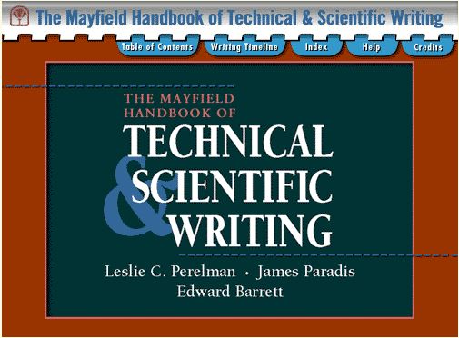

| Code |
Image |
Course title |
Description |
Level |
| CST8101Z |
 |
Computer Essentials |
In this course you will
learn the essentials of computer software, hardware,
and laptop management |
1 |
| CST8116Z |
|
Introduction to Computer Programming |
Enter the fundamentals of logic, code and problem
solving |
1 |
| CST8215Z |
|
Introduction to Database |
Fundamentals of relational database |
1 |
| CST8300Z |
 |
Achieving Success in Changing Environments |
Students explore the possibilities ahead, assess
their own aptitudes and strengths, and apply critical
thinking and decision-making tools |
1 |
| ENL1813Z |
|
Communications I |
Students will learn how to achieve the requirements
of effective communication. |
1 |
| MAT8001Z |
 |
Technical Mathematics for Computer Science |
The study of algebraic and transcendental
functions is an essential prerequisite to Calculus. |
1 |
| CST2355Z |
|
Database Systems |
Students acquire practical experience using market-leading
object-relational database management systems like Oracle and MySQL. |
2 |
| CST8102Z |
|
Operating System Fundamentals (Gnu/Linux) |
Students will learn the basic concepts and components of Operating Systems (OS), and how they function and interact with hardware and software components. |
2 |
| CST8284Z |
|
Object Oriented Programming (Java) |
Students will learn object-oriented programming methodology using the Java programming language. |
2 |
| CST8285Z |
|
Web Programming |
JavaScript, HTML5, and PHP will be taught in this course |
2 |
| ENL2019Z |
 |
Technical Communication for Engineering Technologies |
The students will learn independent and collaborative critical thinking, research, writing, visual communication and presentation skills related to technical topics |
2 |
| GED5004Z |
|
Living Green |
The students will investigate the history and development of current environmental concerns, the environmental impact of our choices and behaviours, and strategies involved in living green. |
elective |
| CST2234Z |
 |
Systems Analysis and Design |
Students will develop systems from inception through elaboration, construction and transition phases using Object-oriented design, modeling tools and techniques. |
3 |
| CST2335Z |
 |
Mobile Graphical Interface Programming |
Students explore graphical user interface programming in a mobile Android environment using the latest Android development tools. |
3 |
| CST8109Z |
 |
Network Programming |
Students will learn the basic structure, design and layered communications models, with an emphasis on data communications, TCP/IP protocol suite, socket programming and multi-threading concepts. |
3 |
| CST8288Z |
 |
Object Oriented Programming with Design Patterns |
Students will learn best practices of object-oriented program development with software design patterns. |
3 |
| CST8283Z |
 |
Business Programming |
Students will learn how to create COBOL programs in a business environment using structured methodology in the latest visual programming environment. |
elective |
| CST8390Z |
 |
Business Intelligence and Data Analytics |
Students will learn the components and best practices of BI technology, and how it guides operational to strategic business decisions in the context of real-world applications. |
elective |
| CST8276Z |
 |
Advanced Database Topics |
Students will learn topics covering business intelligence, data warehouses, data visualization, big data, NoSQL and graph databases. |
4 |
| CST8277Z |
 |
Enterprise Application Programming |
Students will learn the commonly used enterprise systems development technologies such as Java/Jakarta Enterprise Edition, cloud computing, security and the corporate database repository. |
4 |
| CST8333Z |
 |
Programming Language Research Project |
Students will learn a programming language by their own and explore this process of self-study by applying project planning, applied research, testing, and implementation of basic and advanced concepts appropriate to the language or framework under study. |
4 |
| CST8334Z |
 |
Software Development Project |
The students will learn how to use the agile software engineering methodology, teams work with clients to analyze business needs, determine computer system requirements, model system designs, build prototypes, test code and deliver final products. |
4 |
| DSN2001Z |
|
History of Design |
Students will learn graphic design's many influences, including the invention of writing and alphabets, the origins of printing and typography, Victorian, Art Nouveau, Modern Art, and Postmodern design, to the present-day computer revolution and its influence on the many forms of contemporary visual communication that surround us every day. |
elective |
| SSC0081Z |
 |
International Studies |
Students will learn about the relationships that cross national and regional borders, and are responsible for many of the products that we buy, foods that we eat and events that affect our lives. |
elective |